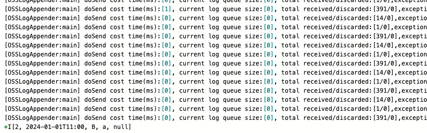

重要概念
想要熟悉interval join的原理或者读懂TimeIntervalJoin.java源码 必须先熟悉几个源码中提到的概念。假设A表 left join B表 ,A表来了一条数据a。那么会有这么几个概念。
rightQualifiedLowerBound(右侧合格下界):它表示右侧流中的事件的最小匹配时间。对于每个左侧流事件，只有右侧流中的事件的时间大于等于
rightQualifiedLowerBound才能与之匹配。rightQualifiedUpperBound（右侧合格上界):它表示右侧流中的事件的最大匹配时间。对于每个左侧流事件，只有右侧流中的事件的时间小于等于
rightQualifiedUpperBound才能与之匹配RightExpirationTime（右侧过期时间):它表示右侧流中的事件的过期时间。如果一个右侧流事件的时间小于
RightExpirationTime，则该事件将被认为已过期，不再与左侧流事件进行匹配。如果是right outer Join或者full join会输出[null,R]。否则直接清除。cleanUpTime(清除时间):它表示对应数据的清除时间。比如此时A表来了数据，那此条数据何时清除呢。理论是当右流时间推进超过对应间隔时，也意味着不可能再有右流的数据与此条数据a进行关联时，此时就可以清除a了。具体时间由此变量决定。源码中类似
1
long cleanUpTime = rowTime + leftRelativeSize + minCleanUpInterval + allowedLateness + 1;
推算区间
熟悉一下根据数据时间推出对应时间间隔。以下sql为例
1 | A left join B |
那么当 A 来了一条数据a 时，对应B的关联区间[+1,+5]，如果a的时间是10:00:00 那么B表只有 [10:00:01,10:00:05]区间才能关联上。
如果B来了一个条数据b呢？简单画一下其实就能知道，如果b的时间是10:00:00 那么A表只有 [09:59:55,09:59:59]能关联上。简单讲，对于左表数据，右表的关联区间为[+1,+5],反过来对右表数据 左表区间就是[-5,-1]。熟悉这个关系，对应阅读源码熟悉执行流程都会有帮助。
还是以此时左表数据a1 10:00:00 先到达，上面的变量值依次为
rightQualifiedLowerBound : 10:00:01
rightQualifiedUpperBound : 10:00:05
RightExpirationTime: watermark(10:00:00) - 1秒 -1毫秒 : 09:59:58.999 （当前先不讨论水位线的生成，不设置延迟时间）, 此时意味着右表小雨这个时间点数据 不可能再和左表数据关联了。
minCleanUpInterval: 这个为源码中设定的
minCleanUpInterval = (leftRelativeSize + rightRelativeSize) / 2;上下边界求和除2cleanUpTime : 10:00:00 + 5秒+3秒 +0 (allowedLateness) + 1毫秒 = 10:00:08.001 意味着这个时间就要清楚a1的状态了，从A表中缓存中剔除了,如果是left join或者full join 就要输出 [a1,null]了
执行流程
通过读源码我们可以梳理以下流程，还是以左流数据到达为例
左流数据到达之后，会先计算三个时间戳
- 根据左流数据时间
left_record_time计算关联右流的时间区间下限right_lower和上限right_upper - 计算左流
left_watermark和右流right_watermark（在 EventTime 语义下这两个时间戳都等于当前的watermark；在 ProcessingTime语义下都等于当前的processing_time） - 计算右流需要过期处理的过期时间
right_expiration_time
如果右流过期时间 right_expiration_time 小于关联区间上限 right_upper，则遍历右流状态里的所有数据
- 如果 join on 条件为 true，则发送
+I[left_record, matched_right_record]；否则啥也不干 - 然后如果右流数据的
right_record_time小于等于右流过期时间right_expiration_time（即右流这条数据永远不会被左流关联到） 并且 join type 为 Right Join 或者 Full Outer Join，则发送+I[null, reight_record]；不管 join type 是什么类型都会清除这条右流数据
如果右流 right_watermark 小于关联区间上限 right_upper （说明这条左流数据还有可能被右流关联到） 则将这条左流数据放到左流状态中，并注册左流数据时间 left_record_time 的定时器，用来清除过期数据
如果右流 right_watermark 大于关联区间上限 right_upper，并且这条左流数据未能与右流关联成功，并且 join type 为 Left Join 或者 Full Outer Join，则发送 +I[left_record, null]
实验验证
简单验证一下A表数据未关联上时的输出时间
1 | SELECT |
输入{“id”:2,”event_time”:”2024-01-01 11:00:00”,”tb_name”:”a”,”data”:”B”}
此时无任何输出
输入{“id”:5,”event_time”:”2024-01-01 12:10:00”,”tb_name”:”b”,”data”:”3”}
无任何输出
{“id”:5,”event_time”:”2024-01-01 12:20:00”,”tb_name”:”b”,”data”:”3”}
无任何输出
{“id”:5,”event_time”:”2024-01-01 12:30:00”,”tb_name”:”b”,”data”:”3”}
仍为输出，因为此时 2024-01-01 12:30:00 仍为边界数据
{“id”:5,”event_time”:”2024-01-01 12:30:01”,”tb_name”:”b”,”data”:”3”}
此时才会有输出


...
...
This is copyright.